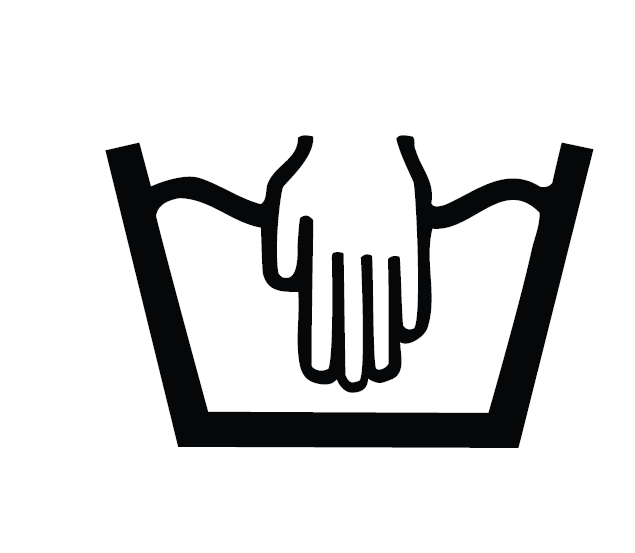
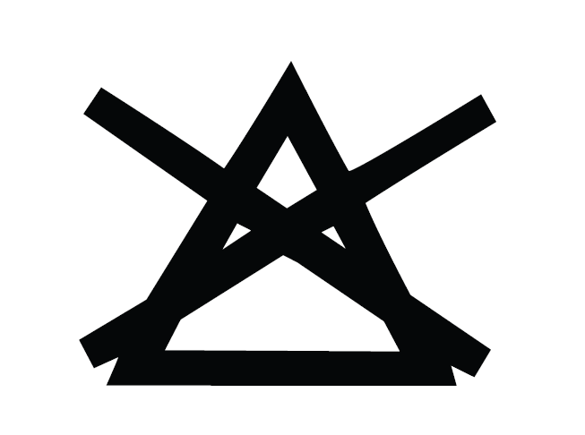
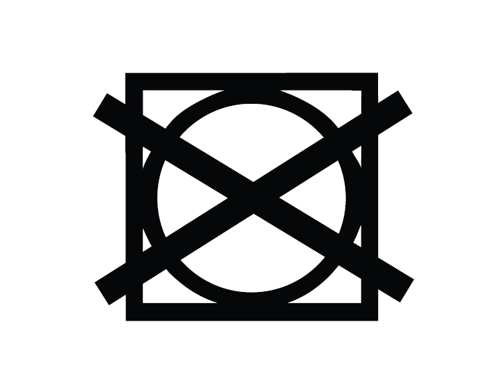
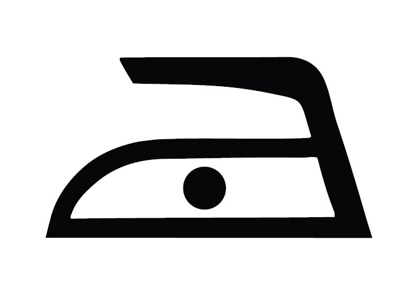
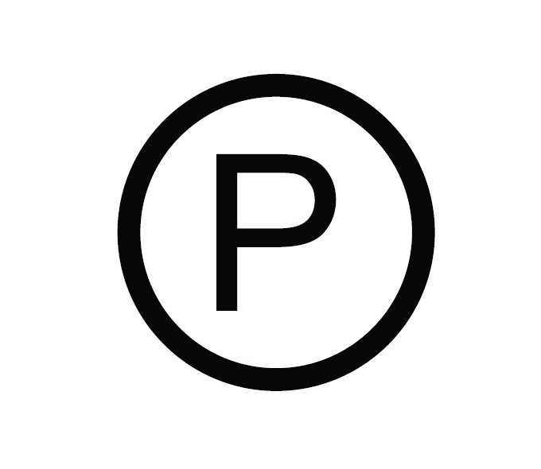

English – Care Instructions
- Hand wash or machine wash on gentle cycle at cold (30°C).
- Do not bleach.
- Do not tumble dry.
- Dry flat.
- Cool iron (110°C), no steam or low steam.
- Dry clean allowed.
80% Modal · 20% Wool





Français – Instructions d'entretien
- Lavage à la main ou en programme délicat à froid (30°C).
- Ne pas utiliser de javel.
- Ne pas sécher en machine.
- Séchage à plat.
- Repassage doux (110°C), sans vapeur ou vapeur faible.
- Nettoyage à sec autorisé.
80% Modal · 20% Laine